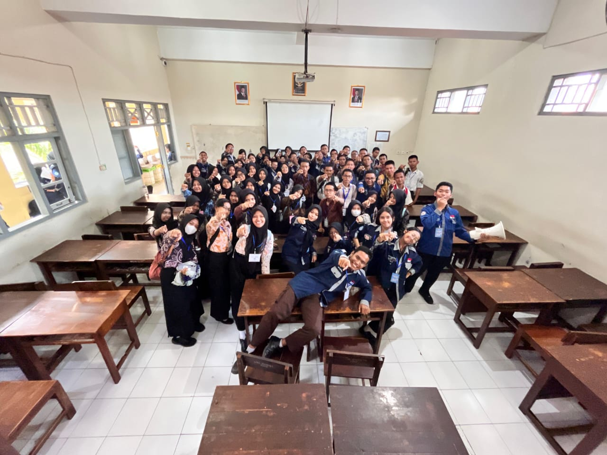
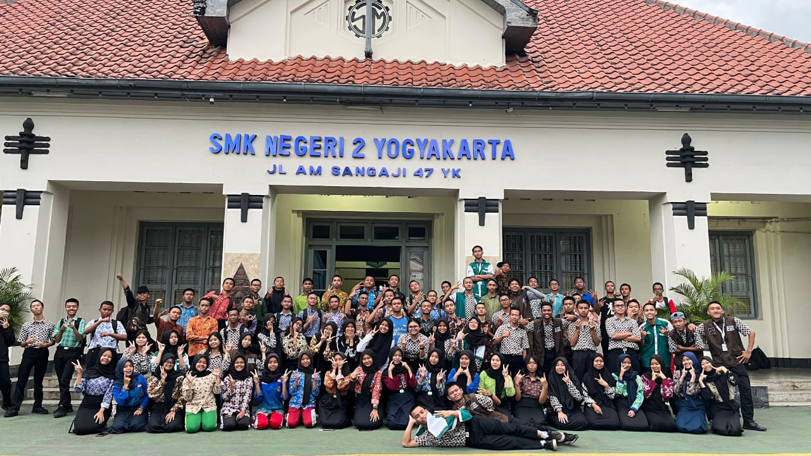

౨ৎ Di Antara Masa Muda dan Hari Esok — Masa-Masa SMK Kami 🎧ྀི
✮ ⋆ ˚｡𖦹 ⋆｡°✩
Hari pertama di SMA terasa seperti membuka babak baru — babak yang dipenuhi harapan, rasa ingin tahu, dan sedikit kegembiraan yang disertai gugup. Sebagai siswa kelas sepuluh yang memasuki lingkungan baru, semuanya terasa asing namun juga menyenangkan. Wajah-wajah baru, guru-guru baru, ruang kelas baru — semuanya tampak berbeda dari sebelumnya. Awalnya memang terasa canggung. Semua orang masih malu-malu, diam-diam memperhatikan satu sama lain, berusaha mencari teman, dan menemukan tempat mereka di lingkungan baru. Namun, sedikit demi sedikit, tawa mulai memenuhi lorong-lorong sekolah, obrolan kecil berubah menjadi percakapan nyata, dan orang-orang yang awalnya asing mulai menjadi teman. Ada campuran emosi — kegembiraan menyambut pengalaman baru, kecemasan menghadapi hal yang belum diketahui, dan tekad diam-diam untuk melakukan yang terbaik, berkembang, dan menjadikan awal baru ini berarti. Setiap hari terasa seperti halaman baru yang menunggu untuk ditulisi — dan di dalam hati, terasa keyakinan bahwa perjalanan ini akan menjadi kenangan yang tak terlupakan.
 |
𓂃˖˳·˖ ִֶָ ⋆🌷͙⋆ ִֶָ˖·˳˖𓂃 ִֶָ
Foto ini diambil saat kami baru memasuki kelas sepuluh di jurusan SIJA awal dari cerita baru kami. Saat itu, semuanya terasa begitu segar dan asing. Kami masih saling belajar nama satu sama lain, masih malu-malu saat berbicara, dan terkadang hanya tersenyum diam-diam dari kejauhan. Namun, di balik rasa canggung itu, ada sesuatu yang begitu murni dan hangat — awal persahabatan sejati yang perlahan mulai terbentuk. Kami mempersiapkan banyak hal untuk foto ini, merencanakannya beberapa hari sebelumnya, memilih pakaian yang akan dipakai, dan memastikan semuanya terlihat sempurna. Foto ini bukan sekadar untuk diambil, tetapi untuk menangkap momen yang menandai awal babak baru dalam hidup kami. Di balik setiap senyum, ada sedikit kegembiraan, rasa ingin tahu, dan harapan untuk masa depan. Meski kami masih malu-malu dan berhati-hati dengan kata-kata, hari itu terasa istimewa. Itu adalah pertama kalinya kami berdiri bersama sebagai sebuah kelas, keluarga baru yang sedang terbentuk. Kini, ketika melihat kembali foto ini, terasa manis mengingat betapa sederhana namun bermaknanya momen itu — hari ketika semuanya perlahan mulai terjadi. |
|  | . ݁₊ ⊹ . ݁ ⟡ ݁ . ⊹ ₊ ݁.
Foto ini diambil setelah wawancara kami untuk seleksi CBPH OSIS/MPK — hari yang masih terasa segar dalam ingatanku meskipun waktu telah berlalu begitu lama. Aku masih ingat senyum gugup kami, detak jantung yang begitu cepat, dan rasa takut yang diam-diam muncul sebelum nama kami dipanggil. Di luar, kami mencoba terlihat tenang, namun di dalam hati, pikiran kami dipenuhi dengan berbagai “bagaimana jika”. Momen itu menjadi salah satu bagian paling tak terlupakan dalam perjalanan hidupku. Ini bukan sekadar tentang menghadapi wawancara; ini tentang menghadapi diri sendiri — kepercayaan diri, ketakutan, dan impian kami. Kami belajar untuk percaya pada suara kami sendiri, berbicara dengan tulus, dan yakin bahwa kami mampu melakukan sesuatu yang lebih besar. Ketika melihat kembali foto ini, aku merasakan hangat dan bangga yang luar biasa. Aku bangga pada diriku sendiri karena cukup berani mencoba, dan aku bahkan lebih bangga pada teman-temanku yang berdiri di sampingku melewati semuanya. Kami menghadapi setiap tantangan bersama, dan meskipun terkadang merasa ragu, kami tak pernah menyerah. Hari itu menandai bukan hanya awal perjalanan kami di CBPH OSIS/MPK, tetapi juga pertumbuhan keberanian, kebersamaan, dan hati kami. |
|  | ‧₊ ᵎᵎ 🍒 ⋅ ˚✮
Foto ini diambil saat pertemuan pertama kami dengan Skaduta Media — atau yang kami panggil dengan hangat, SM. Saat itu adalah musim awal-awal — ketika semuanya terasa asing namun begitu menyenangkan. Kami hanyalah sekelompok siswa yang sedang belajar melihat dunia melalui l ensa, menangkap cerita di balik apa yang bisa dilihat mata. Pada hari itu, kami diperkenalkan pada hakikat SM sebenarnya: sebuah tempat di mana ide-ide berubah menjadi visual, di mana tawa bercampur dengan pembelajaran, dan di mana setiap frame menyimpan kenangan yang belum kami sadari sedang tercipta. Kami belajar cara mengambil video dan foto, bagaimana setiap divisi bergerak dengan ritmenya sendiri, serta bagaimana kerja sama bisa mengubah kekacauan menjadi karya seni. Kami masih malu-malu, ragu, tapi penuh rasa ingin tahu — berusaha menemukan tempat kami di ruang yang perlahan mulai terasa seperti rumah. Kini, melihat kembali, pengalaman itu bukan hanya tentang kamera, editing, atau sudut pengambilan gambar. Itu tentang persahabatan, penemuan, dan momen-momen kecil yang membuat kami jatuh cinta pada apa yang kami lakukan. Saat itulah awal cerita kami — permulaan yang lembut dan hangat sebagai bagian dari SM, ketika kami masih kelas 10, baru mulai memahami banyak hal, namun sudah menyimpan kenangan yang tak akan pernah terlupakan. |
{kind=link}
{kind=link}